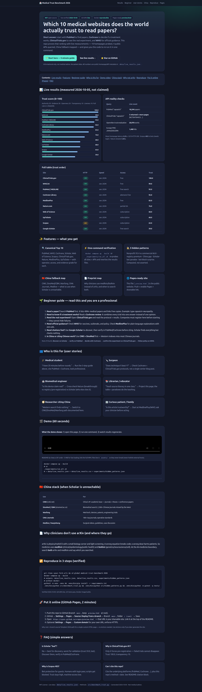

Short answer: start with PubMed to find papers, Cochrane to decide if a treatment works, ClinicalTrials.gov to see the real experiment, and WHO for official guidance. This repo proves that ranking with live measurements — 10 homepages probed, 4 public APIs queried, China fallback mapped — and gives you the code to re-run it in one command.
🌱 Start here — 5-minute guideSee live results ↓⭐ Star on GitHub
Informational only, not medical advice. No patient data. All numbers are public homepage/API metadata in data/live_results.json.
Authority 30 · Evidence 30 · Openness 20 · Transparency 10 · Liveness 10. Full rubric in README.
| Query | Live count |
|---|---|
| PubMed “capsaicin” | 18,244 papers |
| ClinicalTrials “capsaicin” | 5 returned + more pages (NCT04704453…) |
| OpenAlex trust-evaluation | 20,978 works |
| Europe PMC JAMA/DISCERN | 1,480 hits |
Mean homepage latency 2.25 s · 9/10 HTTP-200 · Scopus 403 to bots (needs login) · Nature slowest 5.48 s.
| Site | HTTP | Speed | Access | Trust |
|---|
PubMed, WHO, Cochrane, Scholar, Web of Science, Scopus, ClinicalTrials.gov, Nature, MedlinePlus, UpToDate — with operator, access, and evidence grade for each.
docker compose up --build or ./experiments/run_all.sh re-probes all sites + APIs and rewrites the results files.
Nonprofit 93.4 vs commercial 66.8 · registry premium · China gap · Scholar-last paradox · bot-block surprise. Computed, not asserted.
CNKI, SinoMed/CBM, Wanfang, CMA Journals, Medlive — what to use when Scholar is unreachable.
Why clinicians use medRxiv/bioRxiv instead of arXiv, and when to search both.
This file (preview.html) is the public website. Push + enable Pages = shareable link.
Rule of thumb: discover on Scholar → verify on PubMed → decide with Cochrane → confirm the experiment on ClinicalTrials.gov → follow policy on WHO.
“I have 20 minutes before rounds.” → Run the 5-step guide above, cite PubMed + Cochrane, look professional.
“Does technique X beat Y?” → Check Cochrane + ClinicalTrials.gov protocols, not a single-center blog post.
“Is this device claim real?” → Cross-check Nature (breakthrough) vs registry (pre-registration) vs Scholar (who else cites it).
“Teach source literacy in one class.” → Project this page; the table + paradoxes do the teaching.
“Western search finds nothing.” → Switch to CNKI/SinoMed/Wanfang path documented here.
“Is this article trustworthy?” → Start at MedlinePlus/WHO; ask your clinician before acting.
What the demo shows: 1) open this page, 2) run one command, 3) watch results regenerate.
README tip: keep a GIF under ~5 MB for fast loading; link the full MP4. Files live in assets/ so they never break (never hotlink external hosts).
docker compose up --build # or ./experiments/run_all.sh # → data/live_results.json + data/live_results.csv + experiments/hidden_patterns.json

| Use | For |
|---|---|
| CNKI (cnki.net) | China’s #1 academic base — journals + theses + conference papers |
| SinoMed / CBM (sinomed.ac.cn) | Biomedical search; 2,500+ Chinese journals missed by the West |
| Wanfang | Med-tech, devices, patents, engineering trials |
| CMA Journals | 180+ top journals; operative standards |
| Medlive / Haoyisheng | Surgical videos, guidelines, case discussion |
arXiv is physics/math/CS with a small biology corner and light screening. A wrong equation breaks code; a wrong dose harms patients. So medicine uses medRxiv (clinical/epidemiology/public health) and bioRxiv (genetics/neuroscience/cell). At the AI×medicine boundary, search both arXiv and medRxiv and say which you searched.
git clone <your-fork-url> && cd global-medical-trust-benchmark-2026 docker compose up --build # outputs: data/live_results.json, data/live_results.csv, experiments/hidden_patterns.json # without docker: python3 -m venv .venv && .venv/bin/pip install -r requirements.txt .venv/bin/python src/benchmark_trust.py && .venv/bin/python src/hidden_patterns.py && .venv/bin/python -m pytest -q tests/
Verified 2026-10-05: 4/4 APIs live, 3/3 tests pass, Docker image builds.
main, keep preview.html at root).main, folder / (root) → Save.https://<you>.github.io/<repo>/preview.html — that URL is your shareable site. Link it at the top of the README.Why root + branch source? Simplest 2026 path for a single custom HTML page — no Actions needed. Use Actions only if you later generate the site.
No — best for discovery, worst for validation (trust 59.0, last). Discover there, verify in PubMed/Cochrane.
Only it forces pre-registration — failed trials cannot disappear. Trust 100.0, transparency 10.
Bot protection for guests. Humans with login pass; scripts get blocked. Trust stays high, machine-access low.
Cite the underlying platforms (PubMed, Cochrane…), plus this repo’s method + date. See README citation block.